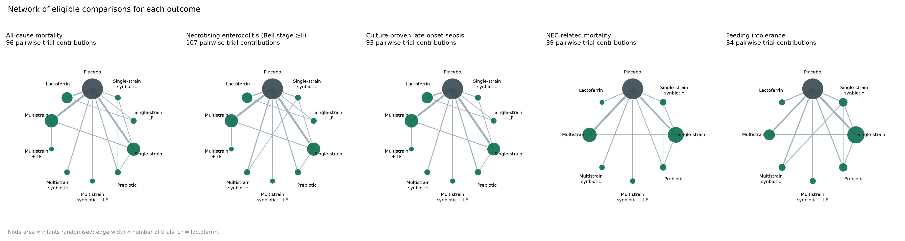
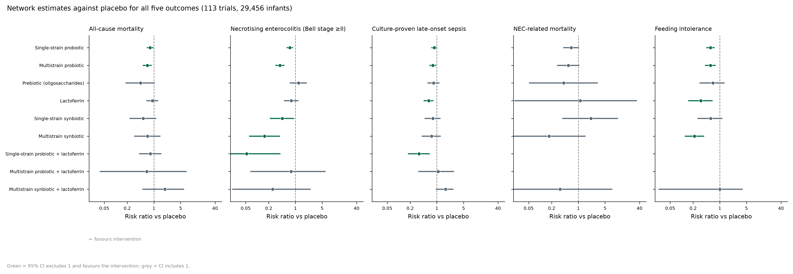
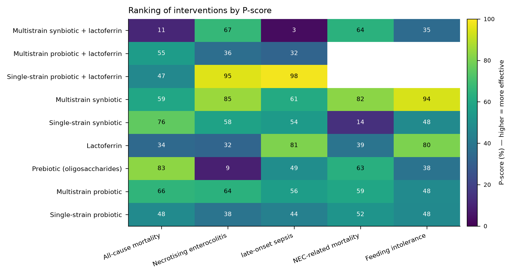
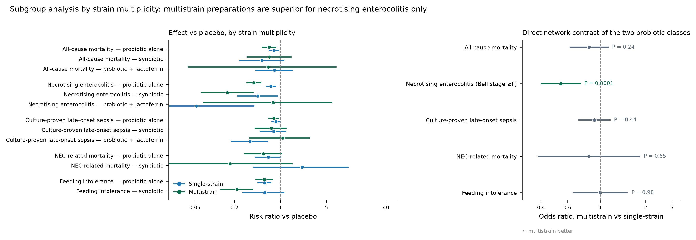
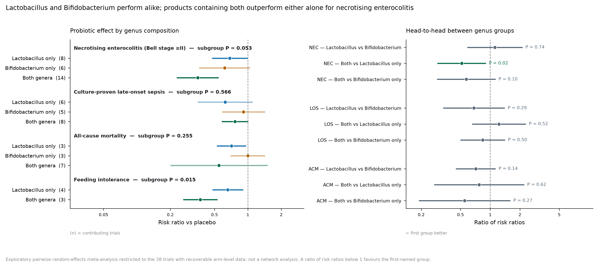
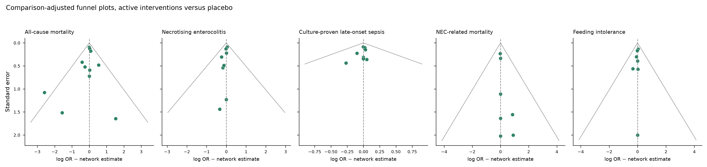
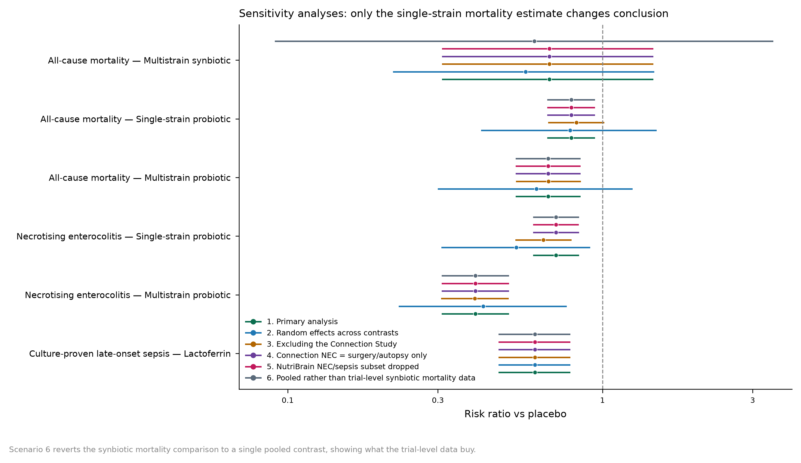

Plain language summary
Do probiotics, prebiotics or lactoferrin prevent death and serious gut and blood infections in babies born too early?
Why this question matters. Babies born before 37 weeks of pregnancy have immature guts. Two conditions dominate their risk of dying in hospital: necrotising enterocolitis, in which part of the bowel becomes inflamed and dies, and late-onset sepsis, a bloodstream infection appearing after the first days of life. Products that change the mix of bacteria in the gut — probiotics (live bacteria), prebiotics (sugars that feed helpful bacteria), synbiotics (both together) and lactoferrin (a milk protein) — have been tested for years as a way of preventing both.
What we did. We brought together 113 randomised trials involving 29,456 preterm or low-birth-weight babies and compared ten different prophylactic strategies against each other at once, using network meta-analysis.
What we found.
- Multistrain probiotics (two or more bacterial strains) reduce death (RR 0.67 (95% CI 0.53 to 0.85)) and necrotising enterocolitis (RR 0.39 (95% CI 0.31 to 0.50)). For every 1000 babies treated, about 19 fewer die and 38 fewer develop the condition.
- Single-strain probiotics also reduce death (RR 0.80 (95% CI 0.67 to 0.94)), but their effect on necrotising enterocolitis is smaller (RR 0.71 (95% CI 0.61 to 0.84)).
- Comparing the two classes directly, multistrain preparations prevent necrotising enterocolitis better than single-strain ones (odds ratio 0.54, 95% CI 0.40 to 0.73). For death, sepsis and feeding problems the two work about equally well.
- Lactoferrin on its own reduces bloodstream infection (RR 0.61 (95% CI 0.47 to 0.79)) but not death or necrotising enterocolitis.
- Prebiotics on their own have not been shown to help.
How confident are we? Moderate for the probiotic effects on death and necrotising enterocolitis; low or very low for the combination products, which rest on one or two small trials each. We could not assess study quality trial by trial, so our confidence ratings should be read as upper limits.
Abstract
Background. Necrotising enterocolitis and late-onset sepsis remain leading causes of death and disability in preterm infants. Modulating the developing intestinal microbiome with probiotics, prebiotics, synbiotics or lactoferrin is a long-standing prophylactic strategy, but the relative effectiveness of the available products — and in particular whether multistrain preparations outperform single-strain ones — has not been settled.
Objectives. To compare the effectiveness of probiotics, prebiotics, lactoferrin and combination products for preventing mortality and major morbidity in preterm and low-birth-weight infants, and to determine whether effects differ between single-strain and multistrain probiotic preparations.
Search methods. PubMed and ClinicalTrials.gov were searched from April 2023 to 19 November 2026, using an intervention-blocked adaptation of a published MEDLINE strategy, combined with an established register of trials identified by searches of MEDLINE, EMBASE, Science Citation Index Expanded, CINAHL, Scopus, CENTRAL and Google Scholar from inception.
Selection criteria. Randomised trials enrolling preterm infants (gestational age < 37 weeks) and/or low-birth-weight infants (< 2500 g), allocated to a probiotic, prebiotic, lactoferrin, synbiotic or combination product versus placebo, no treatment or an alternative active agent, and reporting at least one of five prespecified outcomes.
Data collection and analysis. Frequentist network meta-analysis with placebo as the reference, reporting odds ratios converted to risk ratios and absolute risk differences against pooled placebo-arm risk. Coherence was assessed by the design-by-treatment interaction test and node-splitting; ranking by P-score; small-study effects by Egger-type regression. Single-strain and multistrain probiotics were prespecified as separate network nodes, permitting a direct head-to-head contrast.
Main results. We included 113 trials with 29,456 infants and ten interventions. Multistrain probiotics reduced all-cause mortality (RR 0.67 (95% CI 0.53 to 0.85); moderate certainty) and necrotising enterocolitis (RR 0.39 (95% CI 0.31 to 0.50); moderate certainty). Single-strain probiotics reduced all-cause mortality (RR 0.80 (95% CI 0.67 to 0.94); moderate certainty) and necrotising enterocolitis (RR 0.71 (95% CI 0.61 to 0.84); low certainty). In the direct network contrast, multistrain preparations were superior to single-strain preparations for necrotising enterocolitis (OR 0.54, 95% CI 0.40 to 0.73; P = 0.0001) but not for all-cause mortality (P = 0.24), culture-proven sepsis (P = 0.44), NEC-related mortality (P = 0.65) or feeding intolerance (P = 0.98). Lactoferrin reduced culture-proven late-onset sepsis (RR 0.61 (95% CI 0.47 to 0.79)) and feeding intolerance (RR 0.32 (95% CI 0.15 to 0.63)) but not mortality or necrotising enterocolitis. Prebiotics alone showed no benefit for any outcome. Combination products carried the largest point estimates but were informed by one to three small trials each. Networks were coherent (global design-by-treatment test P ≥ 0.11 for all outcomes). In an exploratory analysis of the 38 trials with recoverable arm-level data, Lactobacillus-only and Bifidobacterium-only preparations did not differ from one another on any outcome (necrotising enterocolitis: ratio of risk ratios 1.11, 95% CI 0.59 to 2.10), whereas preparations containing both genera roughly halved the risk of necrotising enterocolitis relative to either genus alone (versus Lactobacillus only: 0.51, 95% CI 0.29 to 0.90).
Authors' conclusions. Both single-strain and multistrain probiotics reduce all-cause mortality in preterm infants. Where the clinical target is necrotising enterocolitis specifically, multistrain preparations are the better choice: they prevent it roughly twice as effectively as single-strain products, and this is the only outcome for which the two classes differ. Which genus a product is built on does not appear to matter; whether it contains both Lactobacillus and Bifidobacterium may. Lactoferrin is an option where late-onset sepsis dominates the local risk profile. Prebiotics alone cannot be recommended.
Background
Description of the condition
Necrotising enterocolitis is an inflammatory bowel disease that affects between 2% and 10% of infants born before 32 weeks' gestation and up to 22% of those weighing less than 1000 g at birth. It has no effective treatment; surgical management carries high mortality. Late-onset sepsis — bloodstream infection with onset after 48 to 72 hours of life — imposes a comparable burden and its incidence has not fallen despite antimicrobial stewardship, early enteral feeding and hand-hygiene programmes. Both conditions cluster in the first weeks of life, during the period when the intestinal microbiome is being established.
Description of the intervention
Four classes of prophylactic product are in use or under study. Probiotics are live microorganisms that confer a health benefit when administered in adequate amounts; preparations differ in whether they contain a single bacterial strain or several. Prebiotics are non-digestible compounds — inulin, galacto-, fructo- and human-milk oligosaccharides — that selectively stimulate indigenous bacteria. Synbiotics combine the two. Lactoferrin is an iron-binding glycoprotein of human and bovine milk with antimicrobial and immunomodulatory activity. Products containing a probiotic plus lactoferrin, or all three components, have also been trialled.
How the intervention might work
The preterm gut is colonised slowly and atypically, with low diversity and overrepresentation of potentially pathogenic Proteobacteria. Probiotics may displace pathogens competitively, strengthen the mucosal barrier, modulate toll-like receptor signalling and reduce the pro-inflammatory cytokine cascade implicated in necrotising enterocolitis. Prebiotics act indirectly by providing fermentable substrate for bifidobacteria. Lactoferrin sequesters iron from pathogens, disrupts bacterial membranes and promotes enterocyte proliferation. Because a given probiotic strain's effects are strain-specific, preparations containing several strains may act through more mechanisms than a single strain, which is the rationale for examining the two classes separately.
Why it is important to do this review
Many trials compare one product against placebo, but neonatal units must choose between products, and head-to-head trials are rare. Network meta-analysis uses the whole evidence structure to estimate comparisons that have never been tested directly. The question that most often determines local protocol — single-strain or multistrain — is precisely one of these. Two large trials reported since the last synthesis of this evidence base, together with full-text data for several previously unresolvable trials, make a re-analysis timely.
Objectives
- To estimate the comparative effectiveness of probiotics, prebiotics, lactoferrin, synbiotics and combination products for preventing all-cause mortality, necrotising enterocolitis (Bell stage II or III), culture-proven late-onset sepsis, NEC-related mortality and feeding intolerance in preterm and low-birth-weight infants.
- To determine whether effects differ between single-strain and multistrain probiotic preparations, both alone and in combination with prebiotics or lactoferrin.
- To determine whether effects differ according to the bacterial genera a probiotic preparation contains — Lactobacillus, Bifidobacterium, or both.
Methods
Criteria for considering studies for this review
Types of studies. Randomised controlled trials, including factorial and cluster designs. Quasi-randomised trials, pre-post studies and observational designs were excluded. Conference abstracts were eligible if they reported sufficient outcome data.
Types of participants. Preterm infants (gestational age < 37 weeks) and/or low-birth-weight infants (< 2500 g). Trials enrolling both term and preterm infants were eligible only if preterm data were reported separately or more than 80% of participants were preterm. Trials enrolling infants who had already reached full enteral feeds, or who had established early-onset sepsis, feeding intolerance or necrotising enterocolitis at entry, were excluded. Trials randomising mothers rather than infants were excluded.
Types of interventions. Ten nodes were specified: single-strain probiotic; multistrain probiotic (≥ 2 strains); prebiotic (inulin, galacto-, fructo- or human-milk oligosaccharides); lactoferrin; single-strain synbiotic; multistrain synbiotic; single-strain probiotic + lactoferrin; multistrain probiotic + lactoferrin; multistrain synbiotic + lactoferrin; and placebo. Following the convention of the source evidence base, placebo, no intervention, standard care, preterm formula and breast-milk comparators were merged into a single placebo node, on the grounds that none delivers an active microbiome-modulating agent. Preparations of heat-killed organisms were excluded.
Types of outcome measures. Primary: all-cause mortality; necrotising enterocolitis, Bell stage II or III. Secondary: culture-proven late-onset sepsis; NEC-related mortality; feeding intolerance. Continuous outcomes (time to full enteral feeding, duration of hospitalisation, weight at discharge) were outside the scope of this analysis.
Search methods for identification of studies
The review draws on a register of trials assembled by searches of MEDLINE, EMBASE, Science Citation Index Expanded, CINAHL, Scopus, CENTRAL and Google Scholar from database inception, without language restriction. This register was extended by searching PubMed from 1 April 2023 to 19 November 2026 using five intervention term blocks (probiotic/synbiotic; lactoferrin/prebiotic; oligosaccharides; named genera; named species) combined with preterm and randomised-trial filters, taking the union of entry-date and publication-date sweeps. ClinicalTrials.gov was searched for completed trials with posted results. Reference lists of included trials and related reviews were scanned.
Data collection and analysis
Selection of studies. Records retrieved by the search update were screened against the eligibility criteria on title and abstract, and potentially eligible reports were assessed in full text.
Data extraction and management. For each trial we recorded the intervention node, number randomised per arm, probiotic formulation and strain count, treatment duration and the event count and denominator for each outcome. Every extracted count is accompanied in the data files by the verbatim sentence or table fragment supporting it.
Unit of analysis issues. Where a trial had more than two arms, arms assigned to the same node were merged (for example, the 150 mg and 300 mg lactoferrin arms of one three-arm trial). Where a trial compared two doses of the same preparation with no inactive control, it contributed no information to the network and was excluded.
Measures of treatment effect. Odds ratios with 95% confidence intervals. For interpretation these were converted to risk ratios and absolute risk differences using the pooled placebo-arm risk for each outcome, RR = OR / (1 − p₀ + p₀·OR). Assumed placebo risks: all-cause mortality 56 per 1000, necrotising enterocolitis 63 per 1000, culture-proven sepsis 156 per 1000, NEC-related mortality 13 per 1000, feeding intolerance 245 per 1000.
Data synthesis. Frequentist network meta-analysis (netmeta, R) with placebo as reference. The analysis combines two kinds of input. For comparisons where trial-level arm data were obtainable, each trial enters as an individual study. For comparisons where only a published pairwise synthesis of the constituent trials was obtainable, that synthesis enters as a single contrast carrying its random-effects log-odds-ratio and standard error; because between-trial heterogeneity is then already embedded in that standard error, contrasts are combined by inverse-variance weighting rather than adding a second variance component. The consequences of this design are set out under Potential biases in the review process.
Assessment of heterogeneity and coherence. Heterogeneity within each pairwise comparison was quantified by I². Coherence was assessed globally by the design-by-treatment interaction test and locally by node-splitting, comparing direct with indirect estimates for every comparison informed by both.
Assessment of reporting biases. Comparison-adjusted funnel plots and Egger-type regression of each active-versus-placebo contrast on its standard error.
Subgroup analysis. Strain multiplicity and genus composition were both examined. Strain multiplicity was prespecified. Because single-strain and multistrain probiotics are separate nodes, the network yields a direct contrast between them with a formal test of difference; this was computed for the probiotic nodes and for each matched pair of combination nodes. Genus composition could not be examined within the network, because the pooled contrasts aggregate trials of differing genera; it was instead analysed as a separate pairwise random-effects meta-analysis restricted to trials with recoverable arm-level data, and is reported as exploratory.
Sensitivity analysis. Six prespecified or data-driven scenarios, listed in full under Effects of interventions.
Summary of findings and assessment of the certainty of the evidence. Certainty was rated by an explicit rule applied to each intervention-versus-placebo estimate, starting at high and downgrading one level for each of: imprecision (95% CI includes no effect, or CI spans more than a three-fold range); local incoherence (node-split P < 0.05); and fewer than five contributing trials. Risk of bias could not be assessed at the level of individual trials in this analysis, so no estimate was downgraded for that domain and all ratings should be read as upper bounds; the maximum rating awarded is therefore Moderate.
Results
Description of studies
Results of the search. The search update retrieved 152 records, of which 12 were assessed in full text. Seven trials were added to the register; six full-text reports were excluded (two-dose comparison with no control arm; treatment rather than prophylaxis of established NEC; a review misindexed as a trial; a long-term follow-up of an already-included trial; a non-randomised cohort; a microbiome sub-study whose parent trial outcomes are unpublished).
Included studies. 113 trials randomising 29,456 preterm or low-birth-weight infants contribute to at least one outcome network. Ten interventions are represented. Trials were conducted across Europe, North and South America, South and East Asia, the Middle East and Australasia; the largest single trial randomised 2158 infants.
Seven trials entered the register during this update:
| Trial | Node | Arms (n) | Outcomes contributed |
|---|---|---|---|
| Van Rossum (2024) PRIMAL | Multistrain probiotic | 316 vs 322 | ACM, NEC, LOS |
| Mahboobipour (2024) | Multistrain synbiotic | 59 vs 59 | ACM, NEC, FIT |
| Ariff (2025) | Lactoferrin | 203 vs 102 | ACM, NEC, LOS |
| Plaza-Astasio (2025) | Lactoferrin | 50 vs 53 | ACM, NEC, LOS |
| Neu (2026) Connection | Single-strain probiotic | 1066 vs 1051 | ACM, NEC, NRM |
| Shah (2026) LGG | Single-strain probiotic | 115 vs 121 | ACM, NEC, LOS, FIT |
| Voulgari-Kokota / NutriBrain (2026) | Single-strain synbiotic | 50 vs 49 | ACM, NEC, LOS |
Trial-level arm data were additionally recovered for three previously unresolved trials — Sreenivasa 2015 (India, n = 200), Nandhini 2015 (India, n = 218) and Güney-Varal 2017 (Turkey, n = 110) — all testing multistrain synbiotics against no intervention. These three constitute the entire mortality comparison for that node, which could therefore be analysed at trial level rather than as a pooled contrast.
| Trial | Preparation | Mortality | NEC stage ≥II | Culture-proven sepsis |
|---|---|---|---|---|
| Sreenivasa 2015 | L. acidophilus, B. longum, B. bifidum, S. thermophilus (4 strains) + FOS 100 mg | 0/100 vs 3/100 | 0/100 vs 7/100 | 28/100 vs 42/100 |
| Nandhini 2015 | L. acidophilus, B. longum, L. rhamnosus, L. plantarum, L. casei, L. bulgaricus, B. infantis, B. breve (8 strains) + FOS | 10/108 vs 9/110 | 0/108 vs 3/110 | 4/108 vs 4/110 |
| Guney-Varal 2017 | L. rhamnosus, L. casei, L. plantarum, B. animalis (4 strains) + 383 mg FOS + 100 mg GOS | 1/70 vs 9/40 | 0/70 vs 4/40 | 12/70 vs 14/40 |
All three report any-stage necrotising enterocolitis more prominently than stage-specific counts; the stage II/III figures above are the ones used here and differ substantially from the any-stage figures (for example 0 versus 7 rather than 2 versus 10 in Sreenivasa 2015).

| Outcome | Interventions | Contrasts | Design-by-treatment Q | df | P |
|---|---|---|---|---|---|
| All-cause mortality | 10 | 17 | 13.16 | 8 | 0.11 |
| Necrotising enterocolitis (Bell stage II or III) | 10 | 15 | 7.80 | 6 | 0.25 |
| Culture-proven late-onset sepsis | 10 | 14 | 2.10 | 5 | 0.83 |
| NEC-related mortality | 8 | 11 | 0.85 | 4 | 0.93 |
| Feeding intolerance | 8 | 12 | 6.14 | 5 | 0.29 |
Risk of bias in included studies
Trial-level risk-of-bias assessment was not possible in this analysis, because the underlying arm-level data for most trials were not retrievable. This is a material limitation and is discussed below.
Effects of interventions

All-cause mortality
| Intervention | RR vs placebo (95% CI) | Absolute effect per 1000 | Contributing trials | P-score |
|---|---|---|---|---|
| Multistrain probiotic | 0.67 (0.53 to 0.85) | -18.2 (-26.0 to -8.5) | 36 | 66 |
| Single-strain probiotic | 0.80 (0.67 to 0.94) | -11.4 (-18.3 to -3.2) | 28 | 48 |
| Multistrain synbiotic | 0.68 (0.31 to 1.44) | -17.9 (-38.3 to +24.6) | 4 | 59 |
| Single-strain synbiotic | 0.52 (0.24 to 1.12) | -26.5 (-42.3 to +6.8) | 2 | 76 |
| Multistrain probiotic + lactoferrin | 0.65 (0.04 to 6.99) | -19.5 (-53.4 to +332.7) | 0 | 55 |
| Single-strain probiotic + lactoferrin | 0.81 (0.42 to 1.51) | -10.7 (-32.1 to +28.5) | 1 | 47 |
| Multistrain synbiotic + lactoferrin | 1.95 (0.52 to 5.99) | +52.6 (-26.9 to +277.1) | 1 | 11 |
| Lactoferrin | 0.91 (0.66 to 1.25) | -5.1 (-19.1 to +13.8) | 12 | 34 |
| Prebiotic (oligosaccharides) | 0.44 (0.19 to 1.03) | -30.9 (-45.2 to +1.7) | 4 | 83 |
Necrotising enterocolitis (Bell stage II or III)
| Intervention | RR vs placebo (95% CI) | Absolute effect per 1000 | Contributing trials | P-score |
|---|---|---|---|---|
| Multistrain probiotic | 0.39 (0.31 to 0.50) | -38.0 (-43.4 to -31.3) | 36 | 64 |
| Single-strain probiotic | 0.71 (0.61 to 0.84) | -18.1 (-24.8 to -10.2) | 36 | 38 |
| Multistrain synbiotic | 0.16 (0.06 to 0.38) | -53.0 (-58.9 to -38.8) | 7 | 85 |
| Single-strain synbiotic | 0.45 (0.22 to 0.90) | -34.4 (-48.8 to -6.3) | 3 | 58 |
| Multistrain probiotic + lactoferrin | 0.77 (0.07 to 5.97) | -14.5 (-58.5 to +312.3) | 0 | 36 |
| Single-strain probiotic + lactoferrin | 0.05 (0.01 to 0.39) | -59.5 (-62.4 to -38.0) | 1 | 95 |
| Multistrain synbiotic + lactoferrin | 0.25 (0.02 to 2.43) | -47.0 (-61.4 to +89.6) | 2 | 67 |
| Lactoferrin | 0.78 (0.51 to 1.17) | -13.9 (-30.5 to +10.5) | 9 | 32 |
| Prebiotic (oligosaccharides) | 1.21 (0.74 to 1.93) | +13.1 (-16.2 to +58.6) | 5 | 9 |
Culture-proven late-onset sepsis
| Intervention | RR vs placebo (95% CI) | Absolute effect per 1000 | Contributing trials | P-score |
|---|---|---|---|---|
| Multistrain probiotic | 0.79 (0.66 to 0.93) | -33.4 (-52.8 to -10.9) | 29 | 56 |
| Single-strain probiotic | 0.85 (0.74 to 0.98) | -22.9 (-40.1 to -3.6) | 32 | 44 |
| Multistrain synbiotic | 0.73 (0.41 to 1.22) | -43.0 (-91.5 to +34.6) | 4 | 61 |
| Single-strain synbiotic | 0.78 (0.49 to 1.20) | -34.2 (-79.3 to +32.0) | 2 | 54 |
| Multistrain probiotic + lactoferrin | 1.09 (0.34 to 2.74) | +13.6 (-103.3 to +271.8) | 0 | 32 |
| Single-strain probiotic + lactoferrin | 0.34 (0.18 to 0.63) | -102.9 (-128.1 to -57.4) | 1 | 98 |
| Multistrain synbiotic + lactoferrin | 1.69 (0.98 to 2.64) | +107.1 (-2.5 to +256.5) | 2 | 3 |
| Lactoferrin | 0.61 (0.47 to 0.79) | -61.0 (-83.0 to -33.4) | 12 | 81 |
| Prebiotic (oligosaccharides) | 0.82 (0.59 to 1.13) | -28.0 (-64.8 to +20.7) | 5 | 49 |
NEC-related mortality
| Intervention | RR vs placebo (95% CI) | Absolute effect per 1000 | Contributing trials | P-score |
|---|---|---|---|---|
| Multistrain probiotic | 0.55 (0.29 to 1.04) | -6.1 (-9.6 to +0.5) | 18 | 59 |
| Single-strain probiotic | 0.65 (0.42 to 1.01) | -4.7 (-7.8 to +0.2) | 11 | 52 |
| Multistrain synbiotic | 0.17 (0.02 to 1.49) | -11.1 (-13.2 to +6.6) | 2 | 82 |
| Single-strain synbiotic | 2.14 (0.39 to 10.65) | +15.4 (-8.2 to +129.8) | 1 | 14 |
| Multistrain synbiotic + lactoferrin | 0.33 (0.01 to 7.47) | -9.0 (-13.3 to +87.1) | 1 | 64 |
| Lactoferrin | 1.13 (0.02 to 33.17) | +1.7 (-13.2 to +432.9) | 1 | 39 |
| Prebiotic (oligosaccharides) | 0.41 (0.05 to 3.12) | -7.9 (-12.7 to +28.5) | 1 | 63 |
Feeding intolerance
| Intervention | RR vs placebo (95% CI) | Absolute effect per 1000 | Contributing trials | P-score |
|---|---|---|---|---|
| Multistrain probiotic | 0.57 (0.43 to 0.75) | -105.5 (-140.7 to -61.0) | 6 | 48 |
| Single-strain probiotic | 0.57 (0.46 to 0.71) | -104.9 (-133.1 to -71.1) | 13 | 48 |
| Multistrain synbiotic | 0.22 (0.12 to 0.38) | -191.6 (-214.5 to -153.1) | 3 | 94 |
| Single-strain synbiotic | 0.57 (0.27 to 1.12) | -104.6 (-179.2 to +29.7) | 2 | 48 |
| Multistrain synbiotic + lactoferrin | 1.00 (0.03 to 3.85) | +0.0 (-238.8 to +697.8) | 1 | 35 |
| Lactoferrin | 0.32 (0.15 to 0.63) | -167.3 (-207.5 to -90.9) | 2 | 80 |
| Prebiotic (oligosaccharides) | 0.66 (0.30 to 1.30) | -83.0 (-170.8 to +72.9) | 2 | 38 |

Subgroup analysis: single-strain versus multistrain probiotics
| Outcome | Multistrain vs single-strain, OR (95% CI) | P |
|---|---|---|
| All-cause mortality | 0.84 (0.63 to 1.12) | 0.2354 |
| Necrotising enterocolitis (Bell stage II or III) | 0.54 (0.40 to 0.73) | 0.0001 |
| Culture-proven late-onset sepsis | 0.91 (0.72 to 1.16) | 0.4406 |
| NEC-related mortality | 0.84 (0.38 to 1.82) | 0.6536 |
| Feeding intolerance | 1.00 (0.66 to 1.51) | 0.9817 |
Within the combination nodes:
| Outcome | Contrast | OR (95% CI) | P |
|---|---|---|---|
| All-cause mortality | Multistrain synbiotic vs single-strain synbiotic | 1.31 (0.42 to 4.05) | 0.643 |
| All-cause mortality | Multistrain probiotic + lactoferrin vs single-strain probiotic + lactoferrin | 0.80 (0.04 to 14.62) | 0.879 |
| Necrotising enterocolitis (Bell stage II or III) | Multistrain synbiotic vs single-strain synbiotic | 0.34 (0.11 to 1.03) | 0.057 |
| Necrotising enterocolitis (Bell stage II or III) | Multistrain probiotic + lactoferrin vs single-strain probiotic + lactoferrin | 15.28 (0.62 to 374.73) | 0.095 |
| Culture-proven late-onset sepsis | Multistrain synbiotic vs single-strain synbiotic | 0.92 (0.41 to 2.04) | 0.835 |
| Culture-proven late-onset sepsis | Multistrain probiotic + lactoferrin vs single-strain probiotic + lactoferrin | 3.63 (0.85 to 15.60) | 0.083 |
| NEC-related mortality | Multistrain synbiotic vs single-strain synbiotic | 0.08 (0.00 to 1.26) | 0.072 |
| Feeding intolerance | Multistrain synbiotic vs single-strain synbiotic | 0.35 (0.13 to 0.94) | 0.038 |
The contrast for necrotising enterocolitis is the only one that reaches significance, and it is not marginal: an odds ratio of 0.54 means multistrain preparations roughly halve the odds of the condition relative to single-strain ones. The two classes are statistically indistinguishable for every other outcome, and both reduce all-cause mortality against placebo in their own right.

Subgroup analysis: Lactobacillus versus Bifidobacterium
Probiotic preparations in this review draw on two dominant genera. We classified every probiotic-containing arm by the genera named in its formulation as Lactobacillus only, Bifidobacterium only, both genera, or other genus only (Saccharomyces boulardii, Enterococcus, Bacillus spp.). Classification covered the whole register:
| Genus composition | Trials | Infants |
|---|---|---|
| Both genera | 48 | 9,412 |
| Lactobacillus only | 24 | 6,842 |
| Bifidobacterium only | 19 | 6,672 |
| Other genus only | 8 | 1,737 |
The genus and multiplicity classifications are almost collinear. Of the 54 multistrain preparations, 47 (87%) contain both genera, whereas single-strain preparations are single-genus by definition. A contrast framed as multistrain versus single-strain is therefore very nearly the same contrast as mixed-genus versus single-genus, and the two explanations cannot be separated in this evidence base. The analysis below is the attempt to tell them apart.
| Lactobacillus only | Bifidobacterium only | Both genera | Other genus | |
|---|---|---|---|---|
| Single-strain | 21 | 16 | 0 | 7 |
| Multistrain | 1 | 5 | 47 | 1 |
Method and its limits. This comparison cannot be carried out within the network, because the pooled contrasts that inform most of the network aggregate trials of different genera. It was therefore done as a separate exploratory pairwise random-effects meta-analysis (Mantel–Haenszel, DerSimonian–Laird) of probiotic versus placebo, restricted to the 38 trials whose arm-level data were recoverable, with genus composition as the subgroup variable and a test for subgroup differences. These 38 trials are not a random sample of the register — availability of arm-level data tracks open-access publication — so the findings below are hypothesis-generating and are not carried into the summary-of-findings table.
| Outcome | Genus composition | Trials | RR vs placebo (95% CI) | I² | Subgroup difference |
|---|---|---|---|---|---|
| Necrotising enterocolitis | Lactobacillus only | 8 | 0.69 (0.48 to 0.99) | 25% | P = 0.053 |
| Bifidobacterium only | 6 | 0.62 (0.37 to 1.04) | 35% | ||
| Both genera | 14 | 0.35 (0.23 to 0.54) | 2% | ||
| Culture-proven late-onset sepsis | Lactobacillus only | 6 | 0.62 (0.36 to 1.09) | 57% | P = 0.566 |
| Bifidobacterium only | 5 | 0.91 (0.59 to 1.41) | 40% | ||
| Both genera | 8 | 0.77 (0.59 to 1.00) | 46% | ||
| All-cause mortality | Lactobacillus only | 3 | 0.71 (0.53 to 0.95) | 0% | P = 0.255 |
| Bifidobacterium only | 3 | 1.00 (0.71 to 1.41) | 0% | ||
| Both genera | 7 | 0.55 (0.20 to 1.49) | 40% | ||
| Feeding intolerance | Lactobacillus only | 4 | 0.66 (0.49 to 0.90) | 25% | P = 0.015 |
| Both genera | 3 | 0.37 (0.26 to 0.53) | 12% |
Head-to-head contrasts between genus groups (ratio of risk ratios; below 1 favours the first-named group):
| Outcome | Contrast | Ratio of RRs (95% CI) | P |
|---|---|---|---|
| Necrotising enterocolitis | Lactobacillus vs Bifidobacterium | 1.11 (0.59 to 2.10) | 0.74 |
| Necrotising enterocolitis | Both vs Lactobacillus only | 0.51 (0.29 to 0.89) | 0.02 |
| Necrotising enterocolitis | Both vs Bifidobacterium only | 0.57 (0.29 to 1.12) | 0.10 |
| Culture-proven late-onset sepsis | Lactobacillus vs Bifidobacterium | 0.68 (0.34 to 1.39) | 0.29 |
| Culture-proven late-onset sepsis | Both vs Lactobacillus only | 1.23 (0.66 to 2.27) | 0.52 |
| Culture-proven late-onset sepsis | Both vs Bifidobacterium only | 0.84 (0.50 to 1.39) | 0.50 |
| All-cause mortality | Lactobacillus vs Bifidobacterium | 0.71 (0.45 to 1.12) | 0.14 |
| All-cause mortality | Both vs Lactobacillus only | 0.77 (0.27 to 2.18) | 0.62 |
| All-cause mortality | Both vs Bifidobacterium only | 0.55 (0.19 to 1.58) | 0.27 |
Findings. Lactobacillus-only and Bifidobacterium-only preparations are statistically indistinguishable from one another on every outcome examined: necrotising enterocolitis 1.11 (0.59 to 2.10), P = 0.74; culture-proven sepsis 0.68 (0.34 to 1.39), P = 0.29; all-cause mortality 0.71 (0.45 to 1.12), P = 0.14. Neither genus alone reduced necrotising enterocolitis by more than about a third (Lactobacillus only 0.69 (0.48 to 0.99); Bifidobacterium only 0.62 (0.37 to 1.04)).
Preparations containing both genera performed substantially better: 0.35 (0.23 to 0.54) for necrotising enterocolitis, roughly halving the risk relative to either genus alone (both versus Lactobacillus only 0.51 (0.29 to 0.89), P = 0.02; both versus Bifidobacterium only 0.57 (0.29 to 1.12), P = 0.10). The three-way subgroup test for this outcome gave P = 0.053, and heterogeneity within the both-genera subgroup was negligible (I² = 2%). The same pattern appeared for feeding intolerance (both genera 0.37 (0.26 to 0.53) versus Lactobacillus only 0.66 (0.49 to 0.90); subgroup P = 0.015). For culture-proven sepsis and all-cause mortality no subgroup difference was detected (P = 0.57 and P = 0.26).
Interpretation. The choice between a Lactobacillus product and a Bifidobacterium product does not appear to matter. What appears to matter is whether both genera are present. This offers a plausible reading of the strain-multiplicity result reported above: because 87% of multistrain preparations combine the two genera, the apparent advantage of multistrain products for necrotising enterocolitis may reflect genus complementarity rather than strain count as such. The two explanations cannot be distinguished with the available evidence — a single-genus multistrain product would be needed to separate them, and only six such trials exist in the register.

Coherence and reporting bias
The global design-by-treatment interaction test was non-significant for every outcome (P ≥ 0.11). Of 53 comparisons informed by both direct and indirect evidence, 2 showed disagreement at P < 0.05, both involving single-strain probiotics versus placebo (necrotising enterocolitis, direct OR 0.73 versus indirect OR 0.20, P = 0.009; feeding intolerance, P = 0.049). In both the indirect evidence is sparse and the direct evidence dominates the network estimate.
Egger-type tests showed no significant asymmetry for any outcome:
| Outcome | Comparisons | Slope | P |
|---|---|---|---|
| NEC-related mortality | 7 | +0.28 | 0.27 |
| All-cause mortality | 11 | -0.32 | 0.64 |
| Culture-proven late-onset sepsis | 8 | -0.39 | 0.22 |
| Feeding intolerance | 7 | +0.01 | 0.94 |
| Necrotising enterocolitis (Bell stage II or III) | 8 | -0.13 | 0.22 |

Sensitivity analyses
| Scenario | Rationale |
|---|---|
| 1. Primary analysis | — |
| 2. Random effects across contrasts | Adds a second between-contrast variance component |
| 3. Excluding the largest single-strain trial | Tests dependence on one 2158-infant trial |
| 4. Stricter NEC definition in that trial | Its radiographic endpoint had inter-rater κ = 0.36; uses surgery/autopsy confirmation instead |
| 5. Excluding one trial's post-randomisation outcome subset | NEC and sepsis in one trial were reported for 84 of 99 randomised infants |
| 6. Pooled rather than trial-level synbiotic mortality data | Quantifies what the newly recovered trial-level data contribute |
| Outcome / intervention | 1 | 2 | 3 | 4 | 5 | 6 |
|---|---|---|---|---|---|---|
| All-cause mortality — Multistrain probiotic | 0.67 (0.53–0.85) | 0.62 (0.30–1.24) | 0.67 (0.53–0.85) | 0.67 (0.53–0.85) | 0.67 (0.53–0.85) | 0.67 (0.53–0.85) |
| All-cause mortality — Single-strain probiotic | 0.80 (0.67–0.94) | 0.79 (0.41–1.48) | 0.83 (0.68–1.01) | 0.80 (0.67–0.94) | 0.80 (0.67–0.94) | 0.80 (0.67–0.94) |
| All-cause mortality — Multistrain synbiotic | 0.68 (0.31–1.44) | 0.57 (0.22–1.45) | 0.68 (0.31–1.44) | 0.68 (0.31–1.44) | 0.68 (0.31–1.44) | 0.61 (0.09–3.46) |
| Necrotising enterocolitis — Multistrain probiotic | 0.39 (0.31–0.50) | 0.42 (0.23–0.76) | 0.39 (0.31–0.50) | 0.39 (0.31–0.50) | 0.39 (0.31–0.50) | 0.39 (0.31–0.50) |
| Necrotising enterocolitis — Single-strain probiotic | 0.71 (0.61–0.84) | 0.53 (0.31–0.91) | 0.65 (0.53–0.79) | 0.71 (0.61–0.84) | 0.71 (0.60–0.84) | 0.71 (0.61–0.84) |
| Culture-proven late-onset sepsis — Lactoferrin | 0.61 (0.47–0.79) | 0.61 (0.47–0.79) | 0.61 (0.47–0.79) | 0.61 (0.47–0.79) | 0.61 (0.47–0.79) | 0.61 (0.47–0.79) |
Two scenarios matter. Removing the largest single-strain trial (scenario 3) returns single-strain mortality to 0.83 (0.68–1.01) — no longer excluding no effect — and single-strain necrotising enterocolitis to 0.65 (0.53–0.79). Reverting the multistrain synbiotic mortality comparison to a pooled contrast (scenario 6) widens it from 0.68 (0.31–1.44) to 0.61 (0.09–3.46), which is the direct gain from analysing those three trials individually. Multistrain probiotic estimates are unchanged in every scenario.

Summary of findings
Probiotics, prebiotics, lactoferrin and combination products compared with placebo for preventing mortality and morbidity in preterm infants
All-cause mortality
| Intervention | Risk with placebo | Risk with intervention (95% CI) | Relative effect (95% CI) | Participants (trials) | Certainty |
|---|---|---|---|---|---|
| Multistrain probiotic | 56 per 1000 | 37 per 1000 (30 to 47) | 0.67 (0.53 to 0.85) | 9,259 (36) | Moderate |
| Single-strain probiotic | 56 per 1000 | 44 per 1000 (37 to 52) | 0.80 (0.67 to 0.94) | 8,548 (28) | Moderate |
| Multistrain synbiotic | 56 per 1000 | 38 per 1000 (17 to 80) | 0.68 (0.31 to 1.44) | 646 (4) | Very low |
| Single-strain synbiotic | 56 per 1000 | 29 per 1000 (13 to 62) | 0.52 (0.24 to 1.12) | 299 (2) | Very low |
| Lactoferrin | 56 per 1000 | 50 per 1000 (36 to 69) | 0.91 (0.66 to 1.25) | 5,667 (12) | Low |
| Prebiotic (oligosaccharides) | 56 per 1000 | 25 per 1000 (10 to 57) | 0.44 (0.19 to 1.03) | 474 (4) | Very low |
Necrotising enterocolitis (Bell stage II or III)
| Intervention | Risk with placebo | Risk with intervention (95% CI) | Relative effect (95% CI) | Participants (trials) | Certainty |
|---|---|---|---|---|---|
| Multistrain probiotic | 63 per 1000 | 25 per 1000 (19 to 32) | 0.39 (0.31 to 0.50) | 9,462 (36) | Moderate |
| Single-strain probiotic | 63 per 1000 | 45 per 1000 (38 to 53) | 0.71 (0.61 to 0.84) | 9,053 (36) | Low |
| Multistrain synbiotic | 63 per 1000 | 10 per 1000 (4 to 24) | 0.16 (0.06 to 0.38) | 924 (7) | Low |
| Single-strain synbiotic | 63 per 1000 | 28 per 1000 (14 to 57) | 0.45 (0.22 to 0.90) | 344 (3) | Very low |
| Lactoferrin | 63 per 1000 | 49 per 1000 (32 to 73) | 0.78 (0.51 to 1.17) | 5,282 (9) | Low |
| Prebiotic (oligosaccharides) | 63 per 1000 | 76 per 1000 (47 to 121) | 1.21 (0.74 to 1.93) | 709 (5) | Low |
Culture-proven late-onset sepsis
| Intervention | Risk with placebo | Risk with intervention (95% CI) | Relative effect (95% CI) | Participants (trials) | Certainty |
|---|---|---|---|---|---|
| Multistrain probiotic | 156 per 1000 | 123 per 1000 (103 to 145) | 0.79 (0.66 to 0.93) | 8,646 (29) | Moderate |
| Single-strain probiotic | 156 per 1000 | 133 per 1000 (116 to 153) | 0.85 (0.74 to 0.98) | 6,949 (32) | Moderate |
| Multistrain synbiotic | 156 per 1000 | 113 per 1000 (65 to 191) | 0.73 (0.41 to 1.22) | 631 (4) | Very low |
| Single-strain synbiotic | 156 per 1000 | 122 per 1000 (77 to 188) | 0.78 (0.49 to 1.20) | 284 (2) | Very low |
| Lactoferrin | 156 per 1000 | 95 per 1000 (73 to 123) | 0.61 (0.47 to 0.79) | 5,511 (12) | Moderate |
| Prebiotic (oligosaccharides) | 156 per 1000 | 128 per 1000 (91 to 177) | 0.82 (0.59 to 1.13) | 674 (5) | Low |
Certainty was downgraded for imprecision, local incoherence and sparse evidence as described under Methods. Risk of bias was not assessable at trial level, so no rating exceeds Moderate and all ratings are upper bounds. Full table including NEC-related mortality and feeding intolerance, with the downgrade reasons for each row: summary_of_findings.csv (5 KB).
Discussion
Summary of main results
Across 113 trials and 29,456 infants, probiotics of either class reduce all-cause mortality relative to placebo, by about 19 deaths per 1000 treated for multistrain preparations and 11 per 1000 for single-strain preparations. Both also reduce necrotising enterocolitis, but by very different margins — 38 fewer cases per 1000 for multistrain products against 18 for single-strain ones — and the direct network contrast between the two classes is significant for this outcome alone (OR 0.54, 95% CI 0.40 to 0.73; P = 0.0001). Lactoferrin reduces culture-proven late-onset sepsis and feeding intolerance but has no demonstrable effect on mortality or necrotising enterocolitis. Prebiotics given alone show no benefit on any outcome. Combination products occupy the top of the rankings for several outcomes but rest on very little evidence. An exploratory genus-level analysis found no difference between Lactobacillus-only and Bifidobacterium-only preparations on any outcome, but a roughly two-fold advantage for preparations containing both genera over either alone for necrotising enterocolitis.
Overall completeness and applicability of the evidence
The networks are connected and placebo-anchored for all five outcomes, and the two primary outcomes are informed by 36 trials each in the probiotic nodes. Applicability is broad: trials span high-, middle- and low-income settings and a wide range of gestational ages, although most enrolled infants below 32 weeks or 1500 g, and the results should not be extrapolated to late preterm infants. Probiotic products differed widely in strain composition, dose and duration; the single-strain and multistrain nodes each aggregate heterogeneous preparations, so a class-level estimate should not be read as a recommendation for any particular product. Evidence on combination products remains too thin to guide practice.
Quality of the evidence
Certainty reaches Moderate at best, and only for the probiotic effects on mortality and multistrain probiotic effects on necrotising enterocolitis. Most other estimates are Low or Very low, driven by imprecision and by comparisons informed by one to three small trials. One further caution attaches to the necrotising enterocolitis evidence: the largest contributing trial used a radiographic case definition whose inter-rater agreement was only fair (κ = 0.36), and its own authors note that some infants classified as having the condition may have been misclassified. Substituting its surgically confirmed cases does not change the subgroup conclusion.
Potential biases in the review process
The most consequential limitation is structural. For most trials in the register, arm-level event counts could not be obtained from the primary reports, which are largely paywalled; those comparisons therefore enter the network as a single pooled contrast rather than as individual trials. Three consequences follow. Correlation between arms of multi-arm trials is lost. Network meta-regression on gestational age, birth weight, feeding type and risk of bias is impossible, so no formal assessment of transitivity across these effect modifiers was made. And comparisons whose constituent trials were strongly heterogeneous are represented less faithfully than comparisons analysed at trial level — the effect of which is quantified in sensitivity scenario 6, where recovering three trials narrowed one estimate's confidence interval roughly four-fold.
Risk of bias was not assessed for individual trials, and certainty ratings are correspondingly conservative but incomplete. The search update covered PubMed and ClinicalTrials.gov only, so trials published since mid-2023 in sources indexed elsewhere may be missing; this most plausibly affects small non-English trials. Two included trials contain internal numerical inconsistencies (one reports a sepsis count of 5 in a table and 6 in its discussion; another reports risk ratios that cannot be reproduced from its own event counts), and one trial's outcome data were supplied by investigators rather than published. Each is documented in the data files.
Agreements and disagreements with other studies or reviews
Previous syntheses of this evidence base have consistently found multistrain probiotics to reduce mortality and necrotising enterocolitis, and have generally not found a mortality benefit for single-strain preparations. The present analysis agrees on the first point and departs on the second: with the addition of a 2158-infant phase 3 trial, single-strain probiotics now also reduce mortality. That same trial pulls the single-strain necrotising enterocolitis estimate towards the null, which is why the contrast between the two classes has sharpened rather than weakened. Earlier work has also tended to report that strain multiplicity matters across the board; the evidence here supports a narrower claim, confined to necrotising enterocolitis — and suggests that even that claim may be better expressed in terms of genus complementarity than strain count, since the two are almost perfectly confounded in the available trials.
Authors' conclusions
Implications for practice
Prophylactic probiotics reduce all-cause mortality in preterm infants, and both single-strain and multistrain preparations do so. Where a unit's primary objective is to prevent necrotising enterocolitis, a multistrain preparation is the better choice: it prevents roughly twice as many cases as a single-strain product, and this is the one outcome on which the classes demonstrably differ. Where late-onset sepsis dominates the local risk profile, lactoferrin is a reasonable alternative, though it does not reduce mortality. Prebiotics given alone cannot be recommended for any of the outcomes examined. Combination products should be regarded as investigational.
Implications for research
Four priorities follow from the gaps identified here. First, head-to-head trials of specific multistrain preparations against specific single-strain preparations, powered for necrotising enterocolitis, would convert an indirect network contrast into direct evidence; a multistrain preparation built within a single genus would be especially informative, because it is the one design that can separate strain count from genus complementarity. Second, trials should report necrotising enterocolitis by Bell stage, since the stage-specific and any-stage counts differ substantially and only the former is comparable across studies. Third, case definitions of necrotising enterocolitis need better inter-observer reliability than the radiographic criteria currently in use. Fourth, and most immediately, individual participant data — or simply open access to the primary reports — would permit trial-level analysis, risk-of-bias-weighted synthesis and network meta-regression on the effect modifiers that currently cannot be examined at all.
Data and analysis files
- summary_of_findings.csv (5 KB) — Summary-of-findings table for all five outcomes with certainty ratings and downgrade reasons
- nma_vs_placebo.csv (9 KB) — Network estimates against placebo: odds ratios, risk ratios and absolute risk differences
- league_tables.csv (9 KB) — Full league tables (all pairwise network odds ratios) for all five outcomes
- subgroup_strain_contrasts.csv (2 KB) — Single-strain versus multistrain contrasts with tests of difference
- genus_subgroup_results.csv (2 KB) — Genus subgroup meta-analysis: pooled and subgroup-specific effects with I² and subgroup tests
- genus_head_to_head.csv (2 KB) — Ratios of risk ratios between genus groups with tests of difference
- genus_trial_data.csv (6 KB) — The 38-trial arm-level dataset underlying the genus analysis
- genus_evidence_map.csv (0 KB) — Whole-register classification of trials and infants by genus composition
- sucra_pscores.csv (2 KB) — P-scores for every intervention and outcome
- sensitivity.csv (31 KB) — All six sensitivity scenarios
- incoherence_netsplit.csv (21 KB) — Node-splitting: direct versus indirect estimates
- small_study_tests.csv (0 KB) — Egger-type small-study tests
- network_info.csv (0 KB) — Network size and global coherence statistics
- contrasts_updated.csv (7 KB) — The analysis dataset
- tierB_trial_data.csv (1 KB) — Trial-level data recovered for the three multistrain synbiotic trials, with supporting quotations
- new_trials_arm_data.csv (3 KB) — Arm-level data for the seven newly added trials, with supporting quotations
- new_trial_contrasts.csv (3 KB) — Contrasts derived from those arms
- trial_characteristics.csv (77 KB) — Characteristics of included trials: arms, nodes, arm sizes, formulations, citations
- search_update.csv (80 KB) — All screened records with include/exclude decisions
- excluded_studies.csv (1 KB) — Full-text reports assessed and excluded, with reasons
- fulltext_priority.csv (18 KB) — Ranked list of the primary reports whose retrieval would most improve this analysis